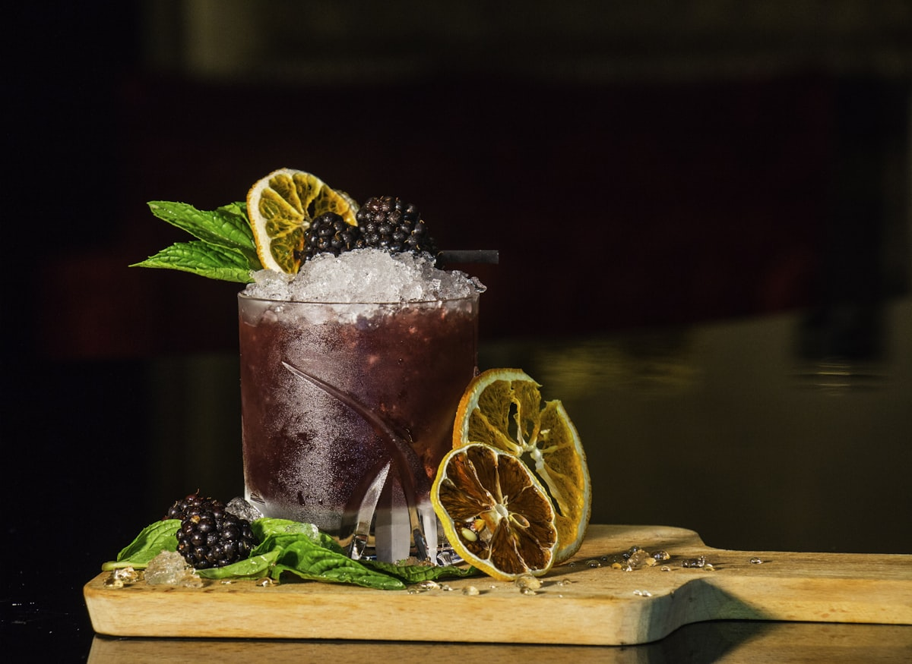

Supper Rituals
Supper Rituals
The Art of the Candlelit Evening Supper: Transforming Dinner into a Sanctuary
Why dimming modern electric glare and dining by candle flame resets circadian rhythms, improves digestive ease, and restores evening peace.
Step-by-step masterclasses on ambient lighting science, unhurried seasonal hearth recipes, botanical elixirs, and mindful dining rituals.
Supper Rituals
Why dimming modern electric glare and dining by candle flame resets circadian rhythms, improves digestive ease, and restores evening peace.
 Solitary Dining
Solitary Dining
Practical techniques for dining alone with intention, practicing sensory mastication, and establishing a tranquil transition between work and rest.
 Seasonal Menus
Seasonal Menus
Curated one-pot bakes, rustic root vegetable stews, and herbal grain bowls engineered specifically for relaxed, unhurried candlelit dining.

Botanical ElixirsCrafting complex, layered non-alcoholic evening elixirs from woodsy herbs, steeped floral waters, tart fruit reductions, and sparkling waters.
 Table Aesthetics
Table Aesthetics
The aesthetics of raw flax linens, handcrafted earthenware, beeswax taper heights, and flickering light placement for atmospheric suppers.
 Intimate Gatherings
Intimate Gatherings
How to host meaningful, relaxed evening dinner parties with prep-ahead menus, warm candlelit staging, and low-pressure conversational pacing.